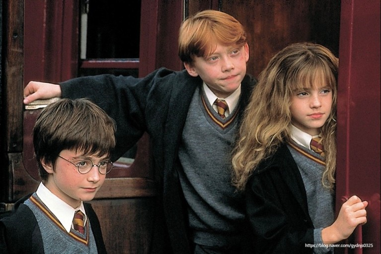

조그만 체구에 갸름한 얼굴을 하고 흐트러진 까만 머리와 초록빛 눈을 가진 소년인 해리 포터는 이마에 번개 모양의 가느다란 흉터가 있고 늘 사촌 두들리에게 물려 받은 헐렁한 헌옷과 낡은 안경을 끼고 다닌다. 해리는 한 살 때 자신의 부모를 살해하고 자신을 공격한 어둠의 마왕을 물리친 위대한 영웅임에도 자신이 마법사라는 사실도 모른채 이모부인 더즐리 가족의 집에 맡겨진 채 온갖 멸시와 학대와 모욕을 당하며 계단 밑 벽장에서 불우한 삶을 살아간다. 그러다 해리의 열한번째 생일날, 호그와트의 사냥터지기 루베우스 해그리드가 나타나서 해리에게 호그와트 입학 편지를 건네주고 모든 사실을 알려주어 해리는 호그와트라는 마법 학교에 입학하고 호그와트로 가는 열차에서 론 위즐리와 친구를 맺는다.

호그와트에 도착한 해리는 4개의 기숙사 중 '그리핀도르'에 배정을 받고 론과 절친이 된다. 호그와트에서 마법의 약 제조법, 약초학, 변신술, 어둠의 마법 방어술, 마법의 역사를 배우게 된다. 해리는 첫 수업부터 스네이프 교수가 마음에 들지 않았고, 스네이프 교수도 해리를 마음에 들어하지 않았다. 또한 해리와 원수지간인 드레이코 말포이가 결투를 신청해서, 밤에 몰래 나가려던 해리와 론은 얼떨결에 헤르미온느와 네빌과 동행하게 된다. 학교 경비인 필치의 고양이인 '노리스 부인'을 발견하자 그들은 말포이의 속임수였다는 것을 눈치채고 도망갔지만 우연히 들어간 방에는 머리가 세 개 달린 개(플러피)가 있어, 모두 도망을 간다. 해리는 헤르미온느가 플러피가 지하실을 지키고 있는 것을 보았다 하여, 그 지하실에 들어있는 물품이 자신과 해그리드가 그린고트 금고에 갔을 적에 해그리드가 비밀 임무라며 꺼냈던 꾸러미라고 추측한다.